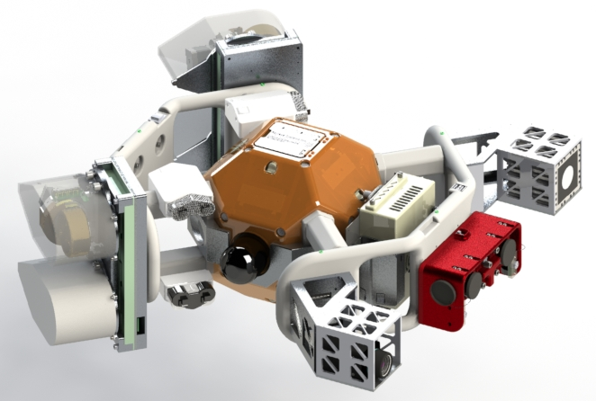
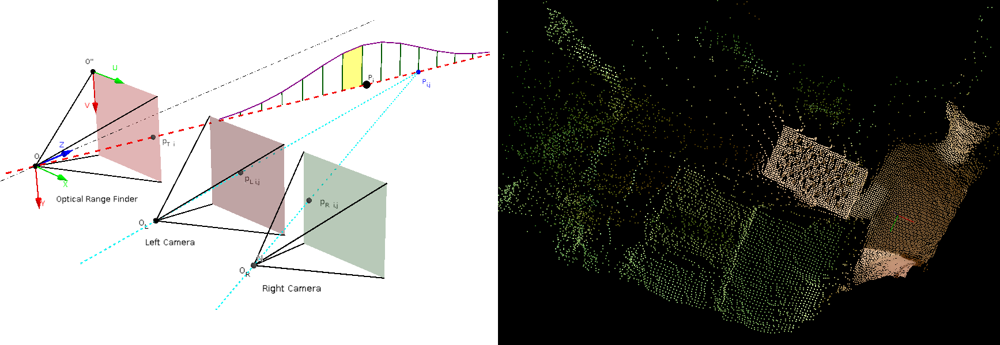

SPHERES, a testbed for experiments in zero-gravity
If you were asked you to picture an astronaut, you would probably image him in his space suit floating on the border between the blue curve of the earth atmosphere and the darkness of deep space. In practice, sending an astronaut out of his vehicle for an EVA (Extra-Vehicular Activity) is quite costly and hazardous. And many challenges had to be solved before being able to send a human being in such a hostile environment.
As a consequence, robots are good candidates to replace some EVA to conduct external damage inspection and repair but a major challenge remain to perform safe and reliable navigation in spatial environment. The SPHERES testbed has been imagined and designed by the Massachussetts Institute of Technology Space Systems Lab then produced and sent the to the International Space Station (ISS) in the first decade of this century to allow scientists and astronauts to conduct several experiments in real zero gravity situation like swarm robotics, vehicles rendezvous and docking, visual navigation, actuation through electromagnetic fields or gyroscope, research on fluid mechanics in space, modular deployment in space, junior robot competitions,...
A new hardware extension to improve visual navigation
Among the challenges induced by visual navigation in space, accurate and reliable sensing is of great importance. Indeed, in a spatial environment, luminosity can be either extremely dark or either too bright for common sensors and the landscape includes large patch of uniform color with few visible details. This leads to failure of classical vision algorithms that are based on corner detection, which request lot of details and contrast. Another constraint is mainly technical as it is difficult to embed a lot of computation power in a small satellite that has to navigate without external help.
To cope with those issues, it has been proposed to create a new extension for the SPHERES nano-satellites called HALO (sent to the ISS in the end of 2016). It could support multiple cameras with different properties to merge their outputs into a more reliable and accurate representation of the external scene for an efficient navigation. In my thesis, I investigated different algorithms to realize this fusion between a 3D Time-of-Flight (TOF) camera, a stereoscopic camera setup and a thermographic camera.
 One SPHERE nano-satellite is encapsulated in the HALO hardware which embed extra batteries, an external linux computer, four gyroscopes, a TOF camera, a thermographic camera and a stereoscopic setup. The full system and project is named INSPECT.{kind=link}
A probabilistic approach to fuse the sensors images
After discussions and bibliographic research, it has been decided to focus on designing a procedure for automatic calibration of the TOF and the stereoscopic camera together and merging dense 3D point clouds constructed from their outputs. Those tasks have been realized using probabilistic theory and Bayes estimation. Some tests were first performed with three degrees of freedom on an air-cushion table then with six degrees of freedom during parabolic flight sessions in a NASA Zero-G plane. Though the automatic calibration method performed really well, the fusion algorithm failed to show significant improvements. It has been concluded that it was not totally appropriate to work with such low accuracy sensors and mechanical setup but there was no time to implement new ideas. The details can be found in my Master thesis or in a paper published in the 45th International Conference on Environmental Systems that also focuses on actuation via the gyroscopes.
 On the left, a representation of the camera setup and the distribution of probability for the TOF camera. On the right, an example of the dense point cloud after fusion.{kind=link}